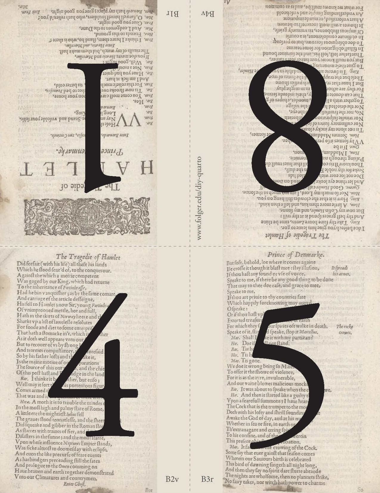

Reproducibilidad
Significa que has detallado claramente tu proceso de investigación para que cualquiera pueda seguirlo y obtener los mismos resultados.

Procesador de texto tradicional

Probablemente el programa que más se ha utilizado para la escritura desde pregrado hasta el mundo profesional.
Diversas barreas: pago/licencia, versionamiento y no permite reproducibilidad
Funcionamiento del texto plano
Entorno: editor de texto
Se entrega un input que pasa por un proceso de renderización (Pandoc) para salir en diversos formatos
Separación entre el texto de entrada y de salida
Marcas de edición: vincula el texto de entrada con el de salida

Markdown
Markdown es una clase especial de lenguaje que permite darle formato a texto simple con pocas marcas. Por ejemplo, poder hacer cursivas, negritas, incorporar links, etc.


Formatos básicos de Markdown
Escribe… |
…o… |
…para obtenerAlgo de texto. |
|
`*Cursivas*` |
`_Cursivas_` |
Cursivas | |
`**Negrita**` |
`__Negrita__` |
Negrita | |
# Título 1 |
Título 1 |
||
## Título 2 |
Título 2 |
||
### Título 3 |
Título 3 |
||
(puedes llegar hasta un título N° 6 con ######) |
|||
`[Link text](http://www.example.com)` |
Link text | ||
`` |
|

Origen del nombre
Se refiere al formato de un libro o folleto producido a partir de hojas enteras impresas con ocho páginas de texto, cuatro por cara, y luego dobladas dos veces para producir cuatro hojas. El libro impreso europeo más antiguo que se conoce es un Quarto, el Sibyllenbuch, que se cree fue impreso por Johannes Gutenberg en 1452-1453.


Quarto® es…
La nueva generación de R Markdown, para todos
Sistema de publicación científica y técnica de código abierto basado en Pandoc.
Lenguaje para crear y formatear documentos con nuevas características, recursos y capacidades.
No es exclusivo de R, también funciona con Python, Julia, y Observable.

¿Cómo funciona?

jupyteroknitrevalúa código Python, Julia, R, u Observable y devuelve un archivo.mdjunto con el código evaluado- Quarto aplica filtros Lua + CSS/LaTeX que Pandoc evalúa junto con el archivo
.mdy convierte a un formato de salida final.
Opciones de chunk
Hay distintas opciones que puedes establecer para cada chunk. Puedes ver una lista completa en la Guía de referencia de RMarkdown o en el sitio web de knitr. Estos recursos se crearon inicialmente para RMarkdown, pero también son aplicables a Quarto.
Otra forma de hacerlo es configurar las opciones generales de todos los chunks que hagamos al inicio del documento en el YAML:

De esta manera ya no es necesario indicar en cada chunk las opciones, y se aplicaran las configuraciones generales que indicamos al comienzo.
1. Almacenamiento de referencias

formato de almacenamiento de citas en texto plano (no es un programa)
Un archivo Bibtex tiene extensión .bib, donde deben estar almacenadas todas las referencias citadas en el texto
Ejemplo referencia en Bibtex

Zotero

instalar https://www.zotero.org
además del programa, instalar “conector” para el navegador ( extensión que permite almacenar directamente con 1 click)
Zotero: vista general

Almacenamiento 1: vía conector navegador
Cuando hay una referencia presente en la página, ir al botón del conector y se guarda (Zotero debe estar abierto)
(la referencia se almacena en la carpeta que está activa en Zotero, se puede cambiar al momento de guardar)

Almacenamiento 2: vía identificador DOI / ISBN / ISSN ]
 ]
]
Almacenamiento 3: manual
Llenando los campos uno por uno:

Zotero-Bibtex: exportación manual

Carpeta -> boton derecho -> export -> formato Bibtex
guardar archivo .bib en carpeta del proyecto
El origen: Abriendo un sistema operativo

Linus Torvalds, 1991 (21 años)
Crea sistema operativo libre (Linux) y lo abre a la colaboración. Postea:
- “I’m doing a (free) operating system (just a hobby, won’t be big and professional…”
Git

es una especie de memoria o registro local que guarda información sobre:
- quién hizo un cambio
- cuándo lo hizo
- qué hizo
mantiene la información de todos los cambios en la historia de la carpeta / repositorio local
se puede sincronizar con un repositorio remoto (ej. Github)
Git/github

actualmente, Git / Github posee más de 100 millones de repositorios
mayor fuente de código en el mundo
ha transitado desde el mundo de desarrollo de software hacia distintos ámbitos de trabajo colaborativo y abierto
entorno de trabajo que favorece la ciencia abierta
El 4 de junio de 2018 Microsoft compró GitHub por la cantidad de 7500 millones de dólares. Al inicio, el cambio de propietario generó preocupaciones y la salida de algunos proyectos de este sitio; sin embargo, no fueron representativos. GitHub continúa siendo la plataforma más importante de colaboración para proyectos de código abierto.